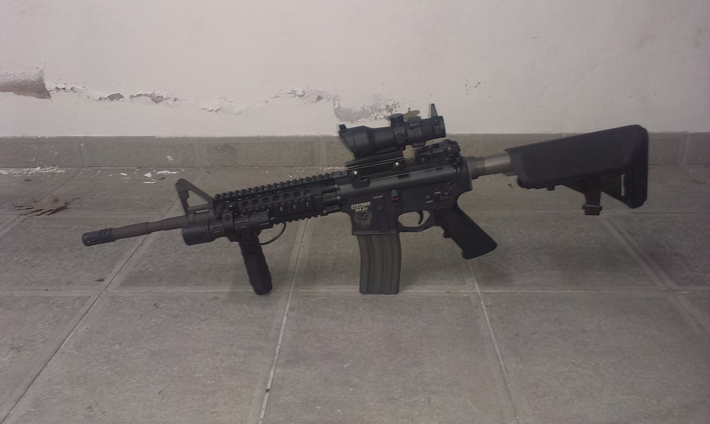
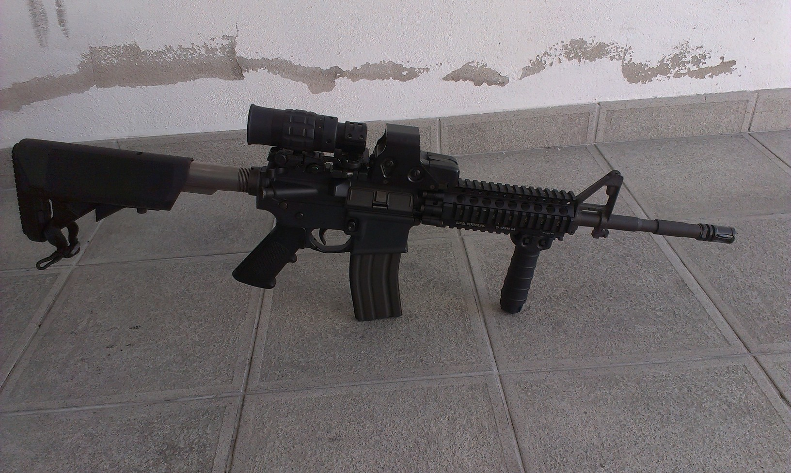
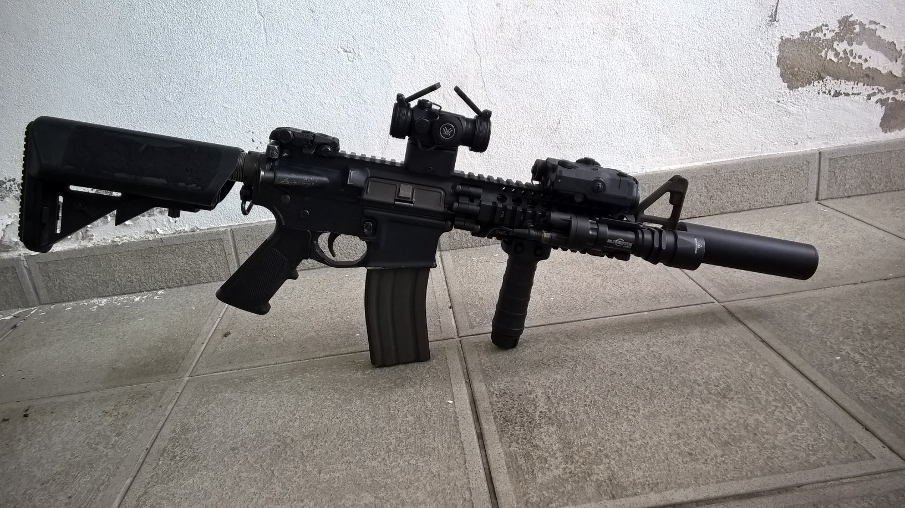
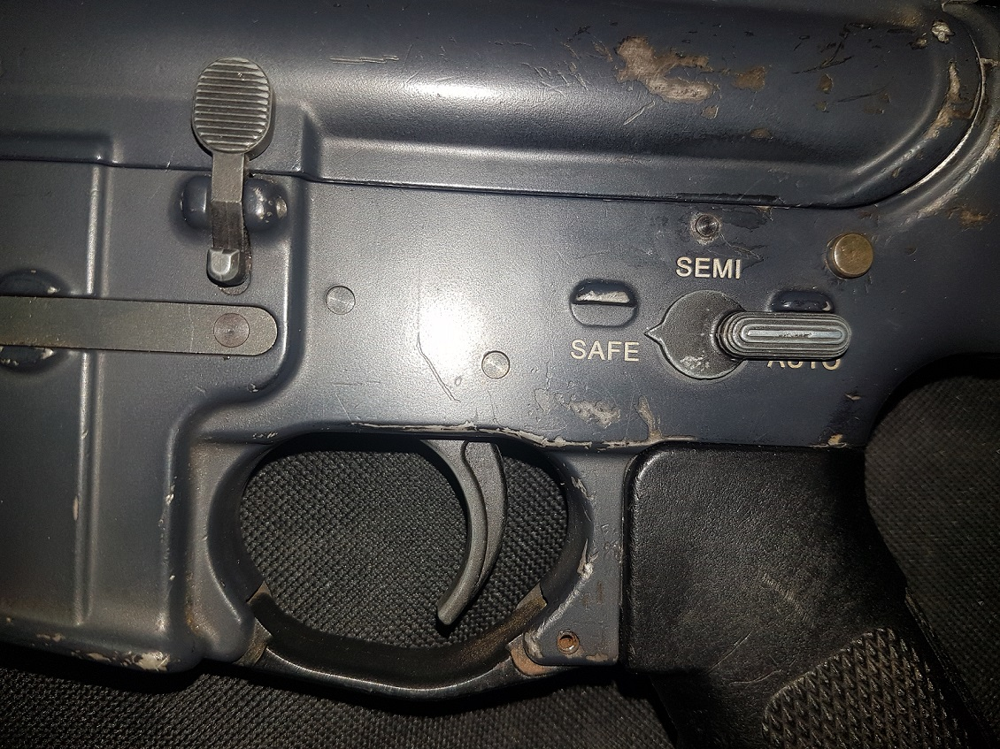
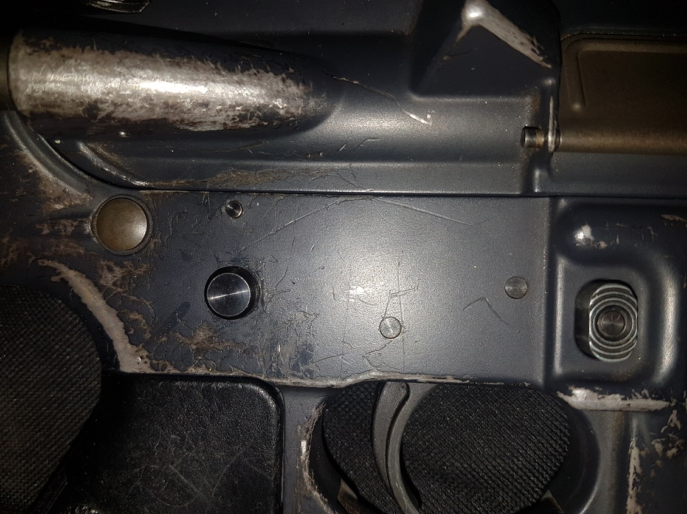
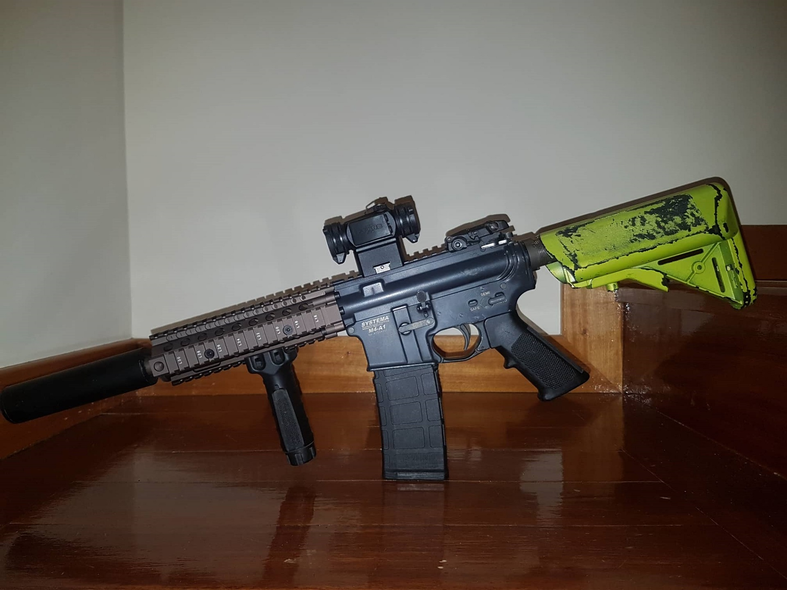

SYSTEMA
Após 6 anos a usar a minha Systema, acho que chegou finalmente a hora de fazer um Review.
Antes de entrar em pormenores convém perceber o porque de eu adquirir uma Systema e porque muita gente compra reproduções desse tipo apesar do preço (mais caro que armas reais muitas das vezes ...).
No meu caso em concreto e de outros jogadores, foi a procura de realismo, de facto eu tinha usado ICS (MP5) e tinha duas Tokyo Marui EBBR (Sopmod e HK416D) adorava jogar com as minhas TM, mas tinha sempre a sensação de jogar com um "brinquedo", isto quando usava diariamente armas reais.
Essa sensação era principalmente derivada aos materiais de construção das reproduções de Airsoft; alumínio e plástico (que mesmo sendo de qualidade acima da norma nas TM) davam uma sensação de "brinquedo" e de "fragilidade", havia outras diferenças como o peso da reprodução e até a sensibilidade do selector de tiro que muitas das vezes mexia só com um ligeiro toque (para o bem e para o mal) bem como poucas funcionalidades comparado com as armas reais.
Na altura essa falta de realismo foi o que me fez querer passar ao nível seguinte e comprar então uma PTW Systema.
Foi em final de 2013 que encomendei a minha Systema, comprei uma Systema M4A1 PTW MAX 2 final evo. (versão montada na fabrica).
E não fiquei desiludido, desde o peso, a qualidade dos materiais de fabrico usados (metal e plástico muito próximos do material real) e sem folgas no corpo, fiquei logo apaixonado.
Na contrução são usados materiais como Aço inox, no buffer tube bem como no proprio cilindro (na versão MAX II), o corpo em si é aparentemente um "Pot Metal" mas de alta qualidade e bem acima de um aluminio de uma AEG qualquer,
os plasticos do punho do guarda mão e da coronha são de alta qualidade e em muito semelhantes aos plasticos usados nas armas reais, ou seja nada se sensação de fragilidade e nada de folgas ... .
A reprodução vem igualemente com um corta mato/trigger guard e uma mira mecanica traseira da Magpull reais.
Acrescentando um tiro a saída de caixa muito bom com um excelente alcance.
Foi amor a primeira vista, tanto que acabei por despachar as minhas TM logo de seguida apesar de serem reproduções topo de gama com um tiro incrível.
{kind=link}

As vantagens das Systemas para dar ao utilizador uma sensação de realismo eram :
- A qualidade do material usado na fabricação como nenhuma outra marca conseguia fazer na altura , dando a sensação ao toque que se tratava de uma arma real.
- Um "bolt funcional" (apesar da culatra não mexer nem o dust cover (sem ser para aceder ao Hop Up através do charging handel) ) que faz com que arma deixe de disparar quando fica sem munições (sem BB's) e é necessário accionar o "bolt release" após introdução de novo carregador para puder voltar a disparar tal e qual com uma M4 ou outras espingardas reais.
- O facto de quando se faz uma troca de emergencia de carregador (após o carregador ficar vazio) a reprodução após pressão no bolt release disparar BB's e não dá um primeiro tiro em "seco" tal como acontece nas armas reais.
- O facto da reprodução permitir ajustar a dureza do selector de tiro que já de origem vem bem regulado e não mexe por inadvertência.
- O Upper e o Lower se desmontar tal e qual como as reais para aceder ao internos (que permite a troca de componentes facilemente).
- Um punho mais fino que os de uma AEG convecional, mas mais proximo do tamanho de um punho real,conseguido através do uso de um motor mais fino inserido no mesmo.
- O peso dos carregadores de origem serem semelhantes ao peso de um carregador real.
Essas semelhanças com as armas reais levaram na a ser categorizada como PTW (Professional Training Weapon) e era usada em Treinos Militares.
A nivel de performance :
A reprodução tem um gatilho electrónico muito sensível que apesar de não ter nada de realista confere ao utilizador uma sensação incrível de resposta de gatilho bem como uma cadencia difícil de igualar, mesmo em Full auto para outras marcas.
Em jogo a reprodução sempre foi incrível e dificilmente falha o alvo com um alance de cerca de 50-55 metros muito constante e precisa. Esqueçam os tiros em curva, com uma Systema o tiro vai direito e longe, o que ajuda no realismo.
{kind=link}

{kind=link}

Versátilidade :
Uma das outras vantagens é também a facilidade de troca de cilindro (potencia), de facto em menos de 30 segundos é possível trocar a potencia da reprodução sem precisar desmontar nada, bem como a facilidade de tirar o cano interno, limpar, e até mesmo mudar o Hop Up.
Essas vantagens todas eram incríveis na época e permitiam ao jogador trocar e ajustar a potencia pretendida consoante o sitio e o pais onde o jogador ia jogar sem recorrer a técnicos nem ter conhecimentos de mecânica de reproduções de Airsoft.
Mas tudo não é perfeito :
Logo nos primeiros jogos tive umas peças no lower que começaram a descolar , nada de grave visto só ser estética, mas pelo preço esperava melhor, tive de voltar a colar as peças várias vezes, mas com o tempo acabei por perder algumas em jogo.
Essas peças podem ser compradas e colocadas de novo, mas la esta porque não foram feitas como deve de ser logo de inicio ou o lower já feito em CNC com as peças embutidas e parte integrante do corpo em vez de coladas... .
O acesso ao Hop Up não é dos mais fáceis e práticos, mas de facto após estar regulado dificilmente vão querer voltar a mexer nele.
{kind=link}

{kind=link}

Fiabilidade : mito ou realidade ?
Muita coisa já foi falada sobre a fiabilidade das Systemas muitos dizem que é só dores de cabeça e muito dinheiro a sair da carteira.
No meu caso em parte é verdade por outra não, a reprodução aguentou cerca de dois anos sem um único problema, e só começou a dar problemas após uma queda durante um, jogo em que ela bateu numa rocha após uma queda minha.
A partir dai foi a minha "desgraça", os conhecimentos que tinha na altura eram limitados e os especialistas em Systema eram poucos, tive que recorrer a uma loja nacional que se dizia especialista Systema, foi de problema em problema, diziam que era uma coisa , mandava compor, voltava a deixar de funcionar e tinha de voltar a levar a loja que voltava a "inventar" outro problema... , escusado é de dizer que não ficou barato, e o problema nunca ficou resolvido através da loja... .
Acabei por comprar um cilindro em segunda mão e resolvi o problema pelo menos durante um tempo, mas passado alguns meses voltou ao mesmo... .
Andei assim durante cerca de um ano, ficando cada vez mais desanimado com a Systema pois não havia solução a vista e cada jogo era uma incerteza, durante esse ano andei sempre a procura de quem pudesse resolver o problema, mas sem sucesso... .
Isto até que acabei por mandar fazer uma revisão e compostura completa ao Bruno Carvalho conhecido como Diips que refez a electrónica (cabos) e fez uma "rebobinagem" ao motor.
Após a revisão troquei as peças internas do meu cilindro que também já acusavam a idade e os jogos, e finalmente a minha replica voltou ao que era.
Desde então nunca voltou a falhar.
Há cerca do corpo exterior após 6 anos de uso, a reprodução acusa algumas marcas de desgaste na tinta e alguns riscos mas nada de grave pelo contrario, para quem usou durante tanto tempo, em tantas condições adversas e teve algumas quedas, ainda se encontra num estado funcional e incrível e sem folgas, o que confirma que o material de fabrico usado é mesmo bom.
Portanto se são fiáveis ou não, acho que depende sempre da sorte e de como o utilizador usa a sua reprodução independentemente da marca, mas em
6 anos falhou me uma única vez (durante um ano inteiro) mas se na altura já tivesse conhecimento do Bruno Carvalho (Diips) provavelmente tinha resolvido o problema muito mais depressa, tinha poupado muito dinheiro e muitas de dores de cabeça... .
Versatilidade :
A Systema, criou uma plataforma incrível que desenvolveram durante anos, mas desde 2013 pouco ou nenhum melhoramento foi feito, criaram uma versão ambidextra (First Variant) em 2014 e fizeram uma versão "Recoil- Shock" (Recoil Model) em 2016 ridícula que não teve sucesso derivado a um sistema de funcionamento arcaico e pouco ou nada pratico por um preço muito superior.
A Systema ficou parada no tempo enquanto a concorrência continuou a melhorar os seus produtos.
Para alem do mais a Systema só fabrica M16, M4/M4A1 ou CQBR ... .
(Deixou de Produzir a versão MP5 há muitos anos atrás) e nunca anunciou nem falou sobre qualquer outra versão ou modelo.
( A Systema não postou nada no próprio Facebook oficial ou no site desde 2017 !!!)
A Systema não produz acessórios para a própria reprodução, o que levou ao aparecimento de companhias (HAO industries etc... )
que fabricam peças e kit's de personalização especifico para Systema principalmente, já que a empresa não o faz, enquanto no mercado encontra-se
reproduções e acessórios de personalização de todas as Armas e marcas existentes e fictícias no mundo militar, e ao gosto de cada jogador.
{kind=link}

Em conclusão :
Relação Qualidade/Preço/Ano.
Em 2013 comprar uma Systema era caro, mas o que se recebia em troca era o "Ferrari" das replicas, nenhuma reprodução vinha tão completa e igualava uma Systema tanto em termos de performance (cadencia de tiro, precisão (fora as TM)) realismo e qualidade de material de construção.
Ter uma PTW era ter algo mais do que uma AEG e apesar de muitos ainda trocarem peças para melhorar as performance da Systema (cano interno e Hop Up Orga/PDI etc...) nunca senti essa necessidade, sempre substitui o material de desgaste por material da Systema (hop Up, O ring etc) e nunca me arrependi nem fiquei insatisfeito com o desempenho da reprodução.
È uma reprodução ideal para todo tipo de jogo , Seja Milsim pelas suas funções mais realistas, bem como skirmish ou até mesmo speedsoft (apesar do peso puder ser um entrave para essa modalidade) derivado a reatividade do seu gatilho e a consistencia de tiro, o que a torna uma reprodução ideal para qualquer jogador de Airsoft.
Em 2019, comprar uma Systema pelo preço será que compensa ?
Na minha opinião : Sim mas por outro lado talvez não... .
Mesmo se não deixa de ser uma excelente compra, que permite jogar mal saia da caixa com uma reprodução topo de gama com performances e realismo incrível que dificilmente vai deixar o utilizador insatisfeito e que vai elevar o nível de jogo de qualquer jogador, hoje em dia consegue-se encontrar e comprar tudo e mais alguma coisa no mercado.
De facto apareceram no mercado muitas marcas desde então, que melhoraram tanto a qualidade dos materiais usados na fabricação das reproduções com preços bem mais interessantes, com internos reforçados, gatilhos electrónicos com melhores performances em geral, e já se encontra muitas reproduções com as vantagens que enunciei acima (troca de potencia facil, bolt funcional etc...) e em modelos de reproduções muito mais variados para alem de M4/M16 ... .
E mesmo que não venha incluído na reprodução, encontra se muito facilmente material que permite meter as reproduções com características semelhantes como: gatilhos electrónicos,
mosfet (Gate Titan etc) que permitem regular cadencias e ter rendimentos iguais ou superiores (ROF) ao de uma Systema bem como internos reforçados,
corpos com material de boa qualidade (E&L etc ...), etc ... .
A Systema ficou parada no tempo, enquanto as outras companhias foram evoluindo e melhorando o material que vendem, colmatando assim as lacunas e diferenças que separavam as Systemas das outras AEG's disponíveis no mercado.
Não se iludam, pois para conseguir "igualar" uma PTW ainda é necessário investir uma boa quantidade de dinheiro,
mas de facto obter algo semelhante ou pelo menos parecido hoje em dia não é impossível, e isso torna a reprodução menos apetecivel que em 2013.
Pontuação Final :
em 2013 sem duvida: 4,5/5 em 2019: 4/5* *penalizado principalmente por não inovar nem apresentar melhorias/novidades e o preço manter-se igual.
site criado por Sarge